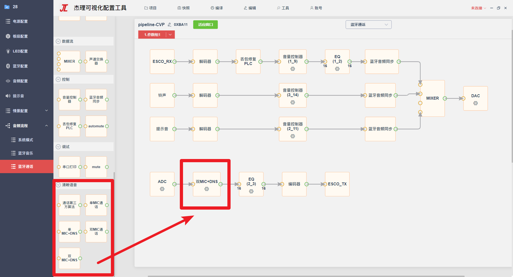
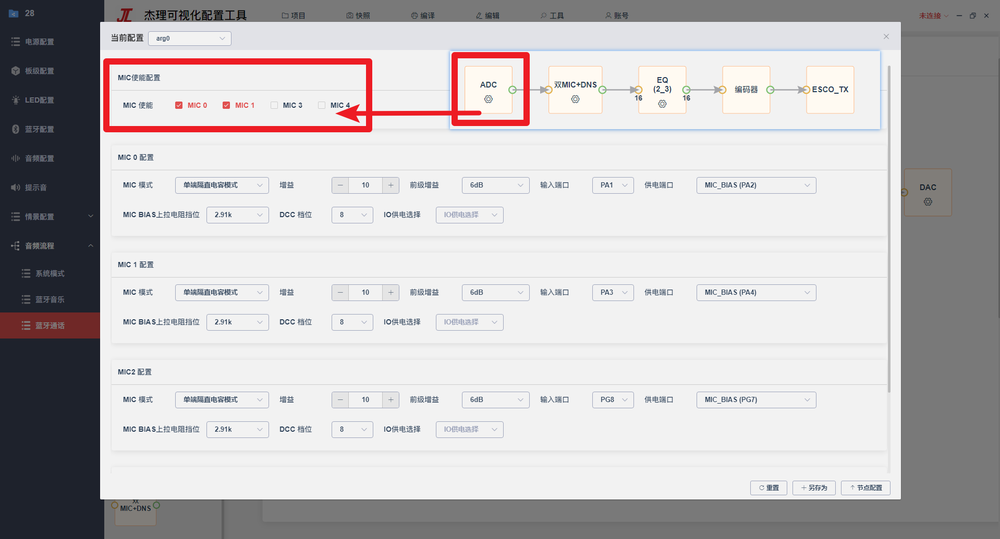

13.5.1. 蓝牙通话流程
13.5.1.1. 算法流程图配置
根据应用方案，在侧边栏的
清晰语音选择匹配的算法节点，拉入到流程图中，删除不用的算法节点，重新连线新的算法节点。如下图中的双MIC+DNS节点 ADC节点配置中MIC使能，勾选与算法对应的MIC个数；如上图中选了双MIC+DNS，则需要勾选两个原理图上对应的MIC，否则数据流会异常； 如果是单MIC相关算法节点，则仅需勾选1个原理图上对应的MIC 
13.5.1.2. Side Tone
Side Tone，即侧音功能，是指通话过程，近端讲话者可以听到自己的声音。如果出现啸叫功能，优先调整Side Tone通路的Gain来改善。